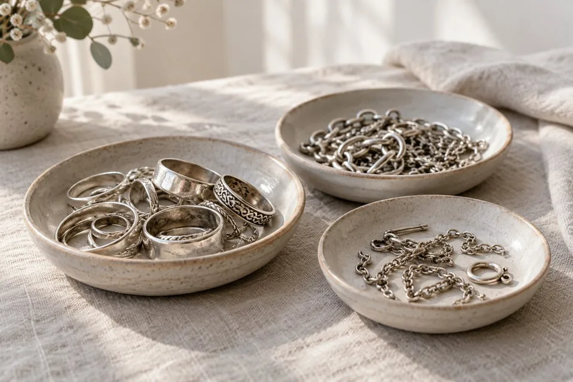

Zaktualizowano:
Wspólna wycena kilku przedmiotów jest wygodna, ale nie powinna sprowadzać się do jednej przypadkowej próby dla całego woreczka. Biżuteria, monety, granulat i sztućce mogą wymagać innych kategorii oraz stawek. Najpierw oblicza się poszczególne pozycje, dopiero potem sumę.
Przygotuj tabelę pozycji
Dla każdej grupy zapisz rodzaj rzeczy, liczbę sztuk, próbę i masę netto. Rzeczy bez ustalonej próby oznacz osobno. Przy monetach oraz sztabkach sprawdź, czy cena dotyczy sztuki, a nie grama. Nie mieszaj gramatury pojedynczego produktu z masą całego pakietu.
Jeżeli masz dwa identyczne pierścionki, nie zakładaj automatycznie, że ważą tyle samo. Różne rozmiary, naprawy i oprawy mogą zmieniać masę. Łączenie jest rozsądne dopiero po potwierdzeniu wspólnych parametrów; w razie wątpliwości zachowaj osobne wiersze.
Przykład dodawania bez uśredniania prób
Załóżmy 10 g stopu 925 i 20 g stopu 800, bez niesrebrnych dodatków. Teoretyczna zawartość czystego srebra wynosi odpowiednio 9,25 g oraz 16 g, czyli łącznie 25,25 g. Prosta średnia prób 862,5 nie opisuje prawidłowo całych 30 g, bo grupy mają różne masy.
Jeżeli korzystasz ze stawek za gram konkretnego stopu, policz 10 g według ceny dla 925 i 20 g według ceny dla 800. Dodaj kwoty dopiero na końcu. Przy produktach inwestycyjnych może obowiązywać osobna pozycja produktowa; nie zamieniaj jej bez sprawdzenia na stawkę za złom.
Jak użyć kalkulatora na stronie?
Wybierz kategorię, wpisz właściwe parametry i dodaj pozycję do wspólnej wyceny. Następny rodzaj materiału wprowadź jako osobną pozycję. Sprawdź liczbę sztuk oraz to, czy masa dotyczy jednej sztuki. Jeśli pojawi się niespodziewanie wysoka suma, poszukaj podwójnie wpisanej ilości lub masy.
Wycena jest robocza. Nie przechowuj w niej jedynej kopii swojej listy: odświeżenie strony czyści stan roboczy zgodnie z działaniem serwisu. Możesz zachować własne zestawienie przed wysłaniem zapytania. Formularz i kalkulator nie potwierdzają składu materiału.
Co potwierdzić podczas oględzin?
Skup srebra Gorzów — wspólną sumę porównaj z wyjaśnieniem poszczególnych pozycji. Zapytaj o odliczenia, próby i kategorię każdej grupy, zamiast oceniać wyłącznie końcową liczbę. Taki rachunek pozwala zauważyć pominięty przedmiot lub błędną jednostkę i spokojnie skorygować dane.
Porównaj bieżące stawki odpowiedniej kategorii lub przejdź do kalkulatora orientacyjnej wyceny.